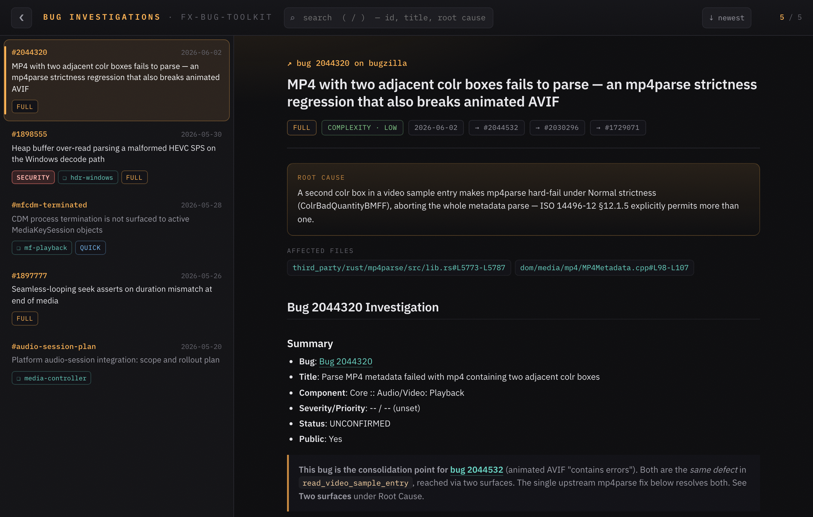
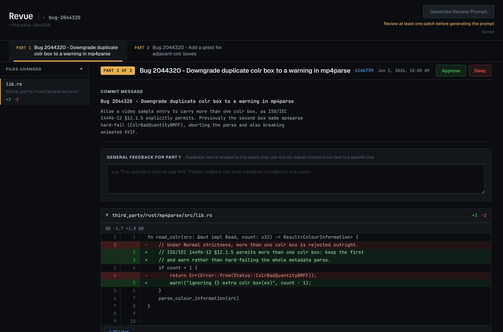
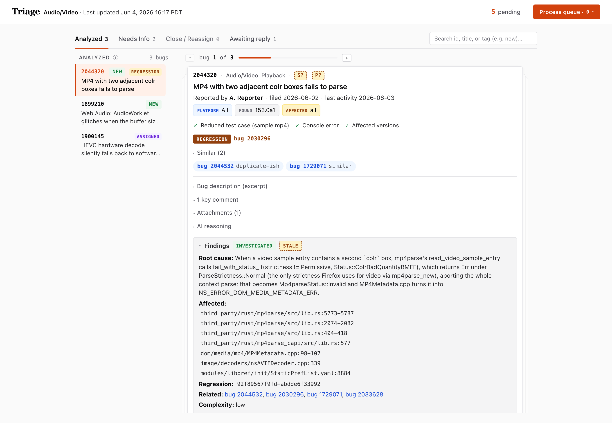
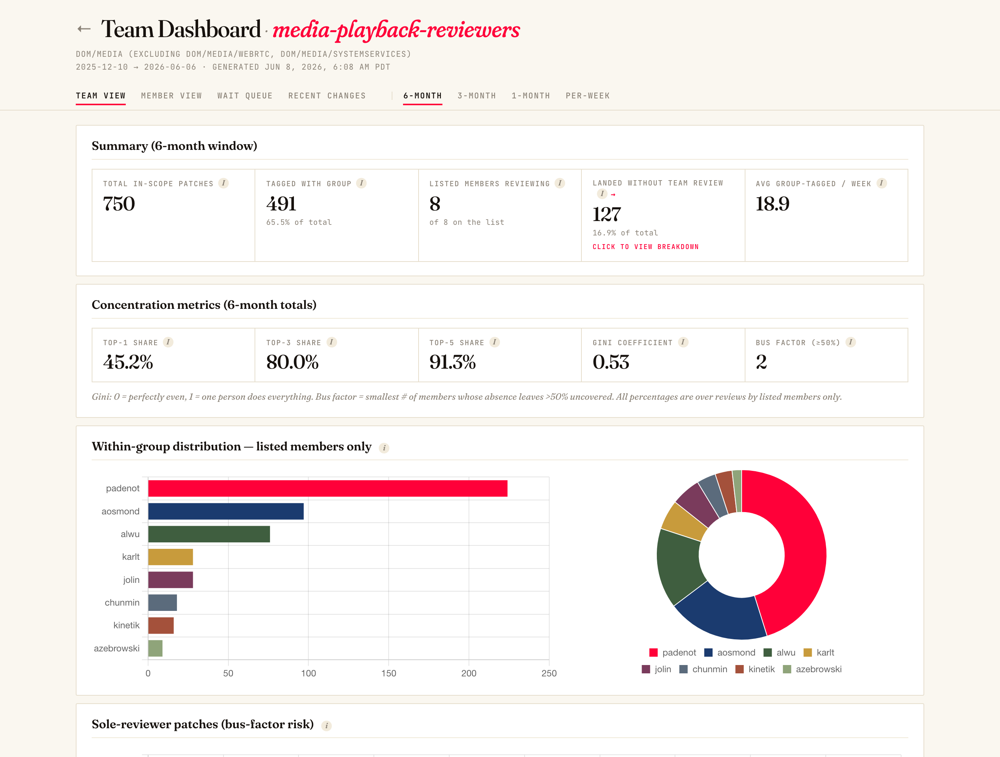

Investigate Firefox bugs, fast. Point it at a bug and it pulls the report, searches Gecko, reads profiles and logs, checks the spec, and writes up a clean, link-rich investigation — then lets you browse them all.
One hub command — /bug-start — drives an end-to-end investigation. Everything else supports it.
No clone needed — add it straight from GitHub:
claude plugin marketplace add alastor0325/fx-bug-toolkit
claude plugin install fx-bug-toolkit@fx-bug-toolkitPrefer a local copy to read or hack on? git clone the repo first, then claude plugin marketplace add ./fx-bug-toolkit.
Plugins load at startup. After restarting, type / and you'll see the toolkit's commands (each shows fx-bug-toolkit as its source).
/initIt checks your environment and offers to install anything missing (it can install the core CLIs for you). When it says “Core investigation ready,” you're good to go.
| Command | What it does |
|---|---|
/init | One-time setup + dependency install/health check |
/bug-start <id> | Investigate a Firefox bug end to end |
/analyze-profile <url> | Analyze a Firefox Profiler capture |
/check-log <path> | Diagnose a Firefox log (media/EME/CDM-aware) |
/open-investigation | Open the investigation viewer |
/triage [id|url] | Draft the Audio/Video bug triage |
/open-triage | Review & apply the triage drafts in a web UI |
/review <D-rev|local|diff> | AI patch review → structured review doc |
/open-review [repo] | Open Revue, the human patch-review web UI |
/open-team [team] | Open the live per-team review-stats dashboards |
/update | Update the plugin + its CLI dependencies |
A few helpers (spec-check, download-guard, source-links, the gecko-navigator and firefox-review agents) run behind the scenes — Claude calls them from the commands above; you don't invoke them directly.
The command you'll use most — give it a Bugzilla bug number:
/bug-start 2044320It runs the whole investigation for you, end to end:
View this investigation → http://127.0.0.1:8777/viewer.html#2044320The investigation file opens with a YAML header — a one-line summary, the root cause, the affected files (searchfox-linked), the regression range, related bugs, and a complexity rating — the same fields the viewer and the triage dashboard surface as chips. Below it is the write-up: a Summary, the Problem Analysis (root cause + code analysis), spec-compliance notes, and related context. Run in the default deep mode — what you use right before writing patches — it also lays out an implementation plan, a patch breakdown, and a test strategy; security bugs gain a Security Rating section. It diagnoses — it doesn't write or land the patch.
/bug-start <id> --triage-mode, which /triage uses to stay quick — that stops at the root cause, affected area, and a proposed-solution sketch, skipping the implementation plan, patch breakdown, and test strategy. The viewer and dashboard flag a shallow write-up as “shallow · re-run for deep”; running /bug-start <id> again later overwrites it with the full investigation.The evidence-reading tools /bug-start leans on are full commands too — handy when you just have a capture or a log and no bug to attach it to yet:
/analyze-profile https://share.firefox.dev/public/... # a Firefox Profiler capture
/check-log /path/to/firefox.log # a Firefox log file/analyze-profile — runs a standard query set over a Profiler capture, checks the relevant threads, pattern-matches known signatures, and returns a findings report./check-log — diagnoses a Firefox log: process crashes, HRESULT and NS_ERROR codes, and the like — with extra depth for media/EME/CDM issues (hardware-context resets, CDM crashes).To revise an existing write-up, just ask in plain language — “update the investigation for bug 2044320 with this new root cause.”
/open-investigationBuilds an index of every investigation (across all your folders) and serves a fast, searchable viewer on 127.0.0.1 — your data never leaves the machine.

/bug-start on a real, public bug — frontmatter summary, root-cause callout, searchfox-linked affected files, and the rendered analysis.FX_BUG_INVESTIGATION_DIR. Optionally connect a shared team knowledge base via the firefox-wiki-plugin — purely additive; it works fully offline without it.| Key | Action |
|---|---|
| / | focus search · Esc clears it |
| w / s | move up / down the list (j/k too) |
| b / \ | fold / expand the sidebar |
/review D12345 # a Phabricator revision
/review local # committed patches on the current branch
/review diff # uncommitted working-tree changes/review is the AI reviewer. It reads the patch, verifies its stated purpose against the relevant spec (via spec-check), checks architecture — threading, lifetime/ownership, IPC validation, error paths — reviews the code line by line, and writes a structured document to your review folder (~/.fx-bug-toolkit/patches-review by default; set FX_REVIEW_DIR to change it). Every finding is graded BLOCKER / IMPORTANT / MINOR / NIT and pinned to a searchfox file:line, so it's actionable rather than vague.
The toolkit owns the two review steps below — writing and landing the patch is your own workflow. A typical flow:
| Step | Whose | What |
|---|---|---|
| Implement the patch | your workflow | Write and land it however you normally do — that part isn't part of this toolkit. |
/review | this toolkit | AI review — purpose vs. spec, architecture, and code → the review document. |
/open-review | this toolkit | Your own human pass before the patch leaves your machine (below). |
/open-review/open-review # the current git repo
/open-review ~/firefox-12345 # a specific repo / worktreeOnce the AI review is clean, you're the last gate. /open-review opens Revue — a local web UI — pointed at your repo. Browse the series worktree by worktree, leave inline comments, approve or deny each patch, then click Generate Review Prompt: Revue writes a single structured prompt and copies it, you paste it to Claude, Claude amends the commits, you reload and keep going. Approvals survive rebases.
/open-review <path>, or run it with no argument to reuse your remembered repo. Revue stores a default in ~/.revue/config.json (via revue init <path>): the first no-argument run asks which folder to open and remembers it, then later runs offer that default or a different folder. Revue shows the patch series — the commits that folder has on top of origin/main — so open a feature branch or worktree with unlanded commits; a clean checkout on an up-to-date main has no series and comes up empty. (The skill pre-flights this and asks which folder you meant if it finds nothing to review.)
/open-review; /review itself needs nothing extra.A second workflow, for bug-triage duty. /triage does the analysis and writes a draft action for every bug in the components you cover; /open-triage is where you review, refine, and apply them. Nothing reaches Bugzilla until you approve it. It ships tuned for Audio/Video, but the component set is configurable — see TRIAGE_COMPONENTS below.
Triage runs in one of two modes, decided automatically by whether a Bugzilla API key is configured. With no key it's read-only; configure a key and it becomes reply mode:
| Mode | When | What you get |
|---|---|---|
| Read-only (default) | no API key | Full AI analysis and a reviewable draft for every bug, plus the dashboard to read them — but no writes. No Apply, no needinfo, no owner CC me / NI me / Assign me. Reads run anonymously (so security-restricted bugs aren't visible), and no TRIAGE_OWNER is needed. |
| Reply | API key present | Everything above, plus writing back: post the comment, set needinfo / priority / severity / fields, the dashboard's Apply + Process queue, and the owner toggles. Also sees security-restricted bugs. Needs TRIAGE_OWNER (below). |
To enable reply mode, give bugzilla-cli a Bugzilla API key: run bugzilla-cli setup and choose write mode (or export $BUGZILLA_BOT_API_KEY) — grab a key from your BMO API-key prefs. With a key present, /triage selects reply mode on its own; with none it stays read-only and asks before anything that would need one. The same signal drives the dashboard — read-only shows a “read-only · drafts only” badge and hides every write control.
Triage talks to Bugzilla through bugzilla-cli (and reads bug reports with bmo-to-md), plus a few environment variables. Reads need no API key (read-only mode); the variables below matter mainly once you're in reply mode. The first reply-mode run resolves what it needs — it asks for the owner email (and lets you set the component set) and persists your answers — so you normally don't set anything by hand:
| Variable | Default | What it's for |
|---|---|---|
TRIAGE_OWNER | reply mode | Your Bugzilla email — the address the dashboard's CC me / NI me toggles add to a draft (off by default, per bug). Only needed in reply mode — read-only needs none. The first reply-mode run asks for it and saves it. |
TRIAGE_DIR | ~/firefox-triage/ | Where /triage writes its drafts, watch list, and log — and where the dashboard reads them from. |
TRIAGE_COMPONENTS | 8 A/V components | Fully configurable — a ;-separated list of the exact Bugzilla component names to triage. Left unset, it covers the default eight Audio/Video components: Audio/Video, Audio/Video: cubeb, Audio/Video: GMP, Audio/Video: MediaStreamGraph, Audio/Video: Playback, Audio/Video: Recording, Web Audio, and Audio/Video: Web Codecs. The first run lets you keep these or set your own. |
FX_BUG_INVESTIGATION_DIR | ~/.fx-bug-toolkit/bug-investigation/ | Shared with /bug-start. When triage runs an investigation, it lands here and the dashboard shows the findings inline on the card. |
/triage does/triage # full session: bugs you're waiting on + new bugs from the last 14 days
/triage 2044320 # just one bug
/triage https://bugzilla.mozilla.org/buglist.cgi?bug_id=2044320,2044532 # every bug ID in the URLA full session runs end to end, entirely on your machine:
INCOMPLETE.about:support, attachments), analyzes any diagnostic artifacts — Firefox Profiler captures (through /analyze-profile), media logs, crash IDs — classifies the bug, searches for duplicates and a matching [meta] bug, and works out what's missing./bug-start investigation so the findings ride along with the draft.$TRIAGE_DIR and opens the dashboard. It never posts to Bugzilla itself — every decision is a reviewable draft./open-triageOpens a local web UI over the drafts on 127.0.0.1:8765. Each bug is a card: the current Bugzilla state, the proposed comment, the priority/severity it'll set, and — when triage investigated it — the /bug-start findings inline.

The four tabs are the four outcomes triage decided for each bug:
| Tab | What's in it | The draft is… |
|---|---|---|
| Analyzed | Bugs triaged with a root cause or a clear assessment | a public comment with the analysis, plus the severity/priority it will set |
| Needs Info | Bugs missing something from the reporter | a needinfo question asking only for the missing items |
| Close / Reassign | Duplicates, invalid bugs, or ones in the wrong component | the closing (INCOMPLETE / INVALID / WORKSFORME) or hand-off comment |
| Awaiting reply | Bugs you've already needinfo'd and are waiting on | — a watch list; an entry is flagged stalled after 14 days with no reply |
The dashboard is read-only toward Bugzilla. Every action on a card just queues an instruction; nothing is posted from the web UI:
TRIAGE_OWNER address to the draft's CC or needinfo; a checked NI me is the “ready for me to pick up” signal.Queued actions collect under Process queue (top-right). When you're ready, open it and hit Copy prompt → paste into Claude: paste that short prompt into a Claude session and it drains the queue — applying your refines and running bugzilla-cli apply for each queued write. Each apply asks you to confirm before it posts, so the production write to Bugzilla is always gated on an explicit yes.
/open-triage (the firefox-triage-dashboard app — FastAPI, in a managed virtualenv); override its port with PORT. /triage works without it — it just writes the drafts to $TRIAGE_DIR./open-team # the landing page — pick a team
/open-team playback # straight to one team/open-team opens firefox-review-stats — per-team dashboards for Firefox review groups, published live and refreshed weekly by a GitHub Action. There's nothing to install and no local server: it's a hosted website, so the skill just opens it — the landing picker by default, or a named team (playback, webrtc, gfx) straight away.

Each team page has four views — cycle them with ←/→:
| View | What it answers |
|---|---|
| Team View | How review load is distributed and how concentrated it is (the metrics below). Toggle the window with Shift+←/→: 6-/3-/1-Month and Per-Week. |
| Member View | A per-member profile — weekly reviews + patches submitted, whose patches they reviewed, and wait times when they're the author. |
| Wait Queue | In-scope, member-authored revisions sorted by longest wait first, linked straight into Phabricator. |
| Recent Changes | A plain-language, LLM-summarized digest of what the component shipped (This Week / This Month), grouped into feature areas. |
The Team View is the load picture at a glance:
…/playback/#queue, this week's digest is …/#recent/1w, a 3-month rollup …/#team/3m. It's a read-only public site: no Bugzilla/Phabricator writes, no local data, no key.The firefox-wiki plugin gives the toolkit a persistent, cited knowledge base, so Claude stops redoing the same code archaeology every investigation. It's one idea: read the wiki before searching code, write back what you learn after — so each bug starts from everything earlier bugs taught it, instead of re-deriving the same facts. It's hook-driven and automatic: install it, work normally, and the loop runs in the background.
You don't invoke any of this; hooks do both halves:
Class::Method-expanded, so MDSM still finds MediaDecoderStateMachine). If it already has the answer, Claude reads the cited facts and may skip the search.stats can show what actually consults it.The lookup, ingest, lint, and verify skills run via those hooks — they're not in the slash menu and you never type them.
verify hook can re-read those sources later and flag any that have drifted. Citations are what make the knowledge trustable instead of a pile of guesses.[[wiki-links]] across components/ (one class or subsystem each), relations/ (how components interact), patterns/ (reusable mechanisms), and architecture/ (end-to-end pipelines). Pulling up one page brings its neighbours, so Claude gets cross-component context — a MediaDecoderStateMachine lookup also surfaces the AudioSink relation and the data-flow pattern it links to, not just one isolated page.Class::Method names from the wiki's alias map, so MDSM, MediaDecoderStateMachine, and MDSM::DecodeLoop all land on the same page — Claude doesn't have to know the exact title.index.json) first and only fall back to the full index when needed, so checking the wiki before every code search stays fast.| Command | What it does |
|---|---|
/firefox-wiki:add <input> | Add knowledge by hand — a spec URL or PDF (distilled into specs/), bug NNNN (extracted from the bug), or a plain-language fact (e.g. "AudioSink runs on the MDSM task queue, not its own thread"). |
/firefox-wiki:stats | Usage metrics — lookup hit rate, most-consulted pages, false-confidence rate, and coverage gaps (run it ~monthly; see below). |
/firefox-wiki:init | One-time setup (below). |
/firefox-wiki:stats about monthly to see whether the wiki is paying off and where to invest:
verify re-check them, fix promptly)./firefox-wiki:add.The plugin (the tooling) and the wiki content (the knowledge) are separate things. Install the plugin once, then point it at a wiki — your own, or a shared team one.
1 — Install the plugin (in your terminal). It needs jq, pandoc, and bmo-to-md:
claude plugin marketplace add alastor0325/firefox-wiki-plugin
claude plugin install firefox-wiki@firefox-wiki-plugin2 — Point it at a wiki. Shared vs. personal is only which git repo WIKI_PATH points at (default ~/firefox-wiki):
WIKI_PATH to your own wiki repo (or a fresh directory) and init scaffolds the structure. Nothing team-specific required — you build knowledge as you go.WIKI_PATH for its accumulated knowledge. The Firefox-media team's content lives in a private repo; request access from its maintainer. Without it you simply start from your own (empty) wiki.# ~/.claude/settings.json — point at your own wiki (init can persist this for you)
{ "env": { "WIKI_PATH": "/Users/you/my-wiki" } }3 — Initialize in Claude Code, then restart. It verifies the dependencies, scaffolds the wiki, installs the pre-lookup hook, and offers to persist WIKI_PATH:
/firefox-wiki:init[[wiki-links]] — open $WIKI_PATH as an Obsidian vault to explore the linked graph visually.